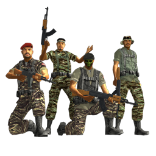
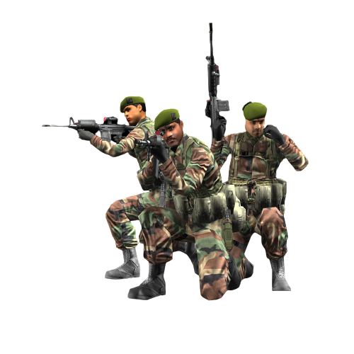

Joint Ops - FPS - MMO
Two Teams 125 v 125
About Game
The record breaking modern FPS MMO game re-vived! The conflict in Indonesia has spilled over to other parts of Asia where rebel troops have gained support in the war against Joint Ops Forces. Set against the lush backdrop of South East Asia, enlist once more to take part in intense large scale modern FPS combat, in multiplayer games of up to 250 players. Use new weapons, vehicles, team tactics and strategic gameplay to dominate the battlefield. Travel on vehicles or on foot across super-foliated jungle terrains using the early morning sun glare to your advantage in combat, or canopy coverage at dusk to remain undetected with the engines built in day-light cycle. Friend or Foe? Play as a member of a Joint Operations force or fight for independence as a member of the Indonesian rebel group, with a choice of weapons and vehicles at your disposal.
How To Play Joint Ops
01
Install The Game And Patch Then Customize Your Soldier Loadout & Appearance & Name.
02
Join Or Host A Game Session By Loading Into LAN & Selecting Join/Host.
03
Join Our Discord & Network With The Community Share & Plan Events!